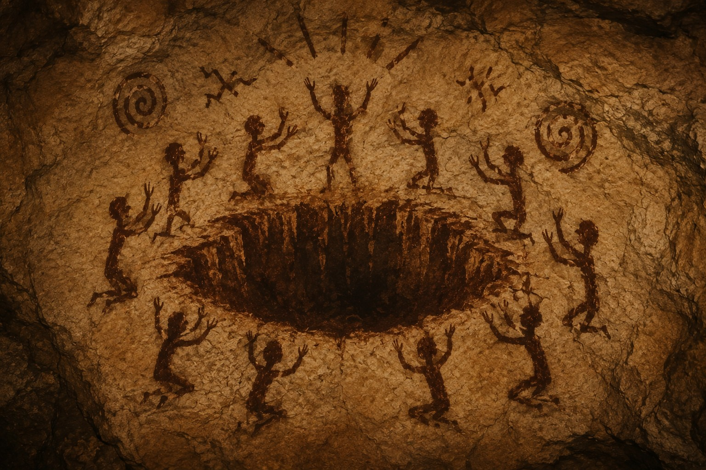
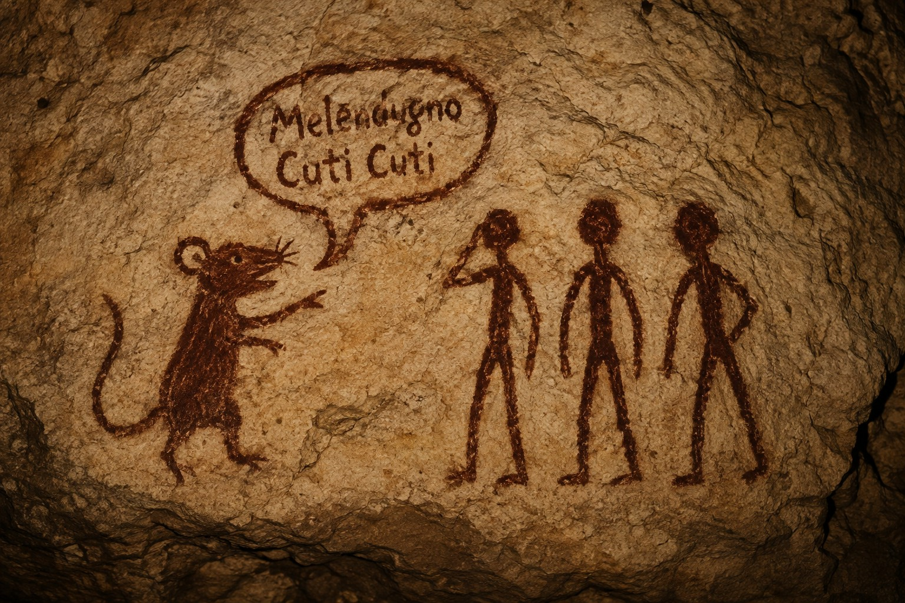
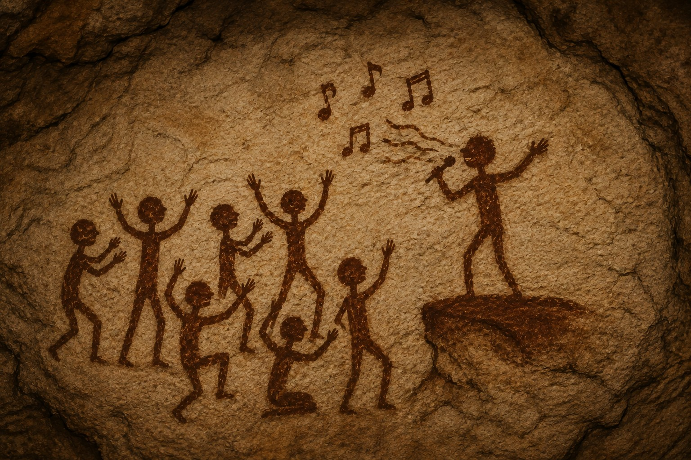

Nel 3000 circa aP, le prime civiltà apparvero principalmente nel Salento, distribuite in piccoli insediamenti indipendenti l'uno dall'altro.
I primi popoli
- Serrano — i Serranidi
- Melendugno — i CutiCuti
- Martano — i Pacci
I Serranidi e l'abisso
Le conoscenze su queste prime tribù restano scarse. Si sa però una cosa con una certa sicurezza: i Serranidi realizzavano numerose illustrazioni raffiguranti un abisso situato sotto Serrano, che si apriva e si chiudeva periodicamente e che, a seconda delle occasioni, avrebbe inghiottito o restituito oggetti, persone e persino intere capanne.

Illustrazione rupestre attribuita ai Serranidi, raffigurante l'abisso di Serrano.
I CutiCuti e il topo
Un'illustrazione ritrovata nei pressi di Melendugno raffigura invece un topo nell'atto di parlare ai CutiCuti, sebbene il contenuto esatto del messaggio resti, ad oggi, sconosciuto.

Illustrazione del topo che si rivolge ai CutiCuti di Melendugno.
I Pacci
Un'illustrazione ritrovata nei pressi di Martano raffigura un personaggio dai tratti sorprendentemente somiglianti a un cantante di fama nazionale, sebbene la sua reale identità resti, ad oggi, sconosciuta.

Presunto ritratto di un Paccio, ancora da identificare con certezza.